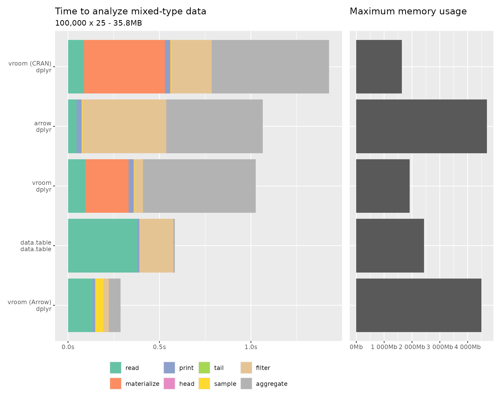
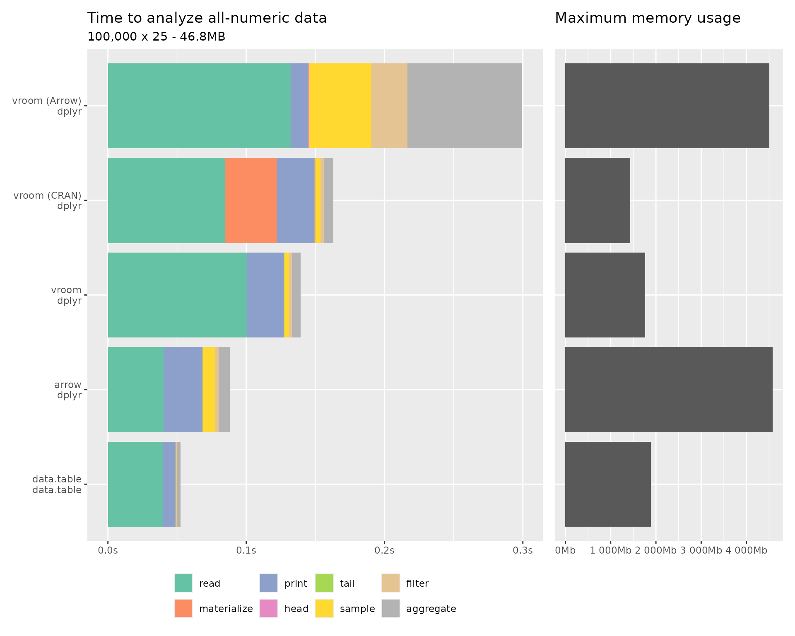
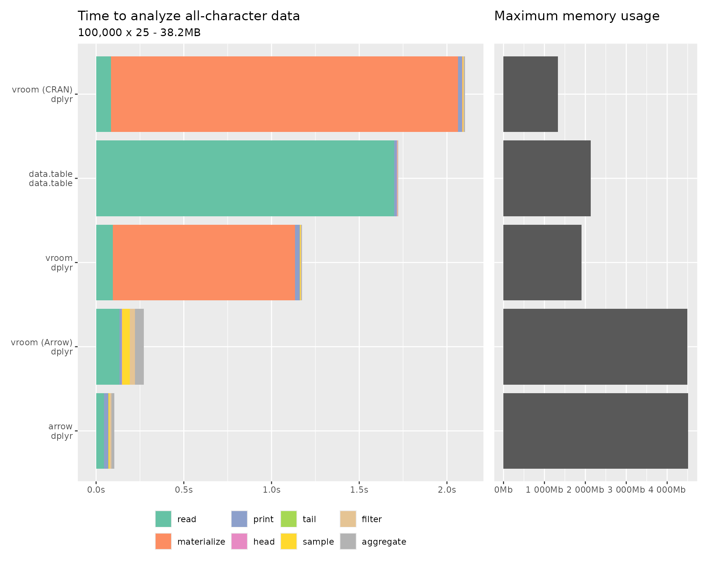

These benchmarks compare vroom with its new libvroom
SIMD-accelerated backend against CRAN vroom, arrow, and
data.table across several data reading and manipulation
scenarios. Each benchmark reads a file, then performs a series of common
operations: printing, taking head/tail, sampling, filtering, and
aggregation.
The libvroom backend uses portable SIMD instructions (via Google Highway) for CSV parsing and outputs data in Arrow columnar format for efficient R integration.
Reading delimited files
The following benchmarks measure reading delimited files and performing common data manipulation tasks. A “materialize” step is included after reading to convert lazy representations into fully realized R vectors, providing a fair comparison across packages.
Mixed-type data
This dataset contains a mix of character, integer, and double columns, representing a typical real-world CSV file.

| reading package | manipulating package | memory | read | materialize | head | tail | sample | filter | aggregate | total | |
|---|---|---|---|---|---|---|---|---|---|---|---|
| vroom (CRAN) | dplyr | 1.6GB | 88ms | 443ms | 29ms | 1ms | 1ms | 5ms | 221ms | 643ms | 1.4s |
| arrow | dplyr | 4.58GB | 47ms | 1ms | 27ms | 1ms | 1ms | 5ms | 459ms | 528ms | 1.1s |
| vroom | dplyr | 1.87GB | 95ms | 237ms | 28ms | 1ms | 1ms | 4ms | 48ms | 617ms | 1s |
| data.table | data.table | 2.38GB | 382ms | 1ms | 9ms | 1ms | 1ms | 1ms | 186ms | 9ms | 584ms |
| vroom (Arrow) | dplyr | 4.39GB | 135ms | 1ms | 14ms | 1ms | 1ms | 45ms | 30ms | 65ms | 288ms |
All-numeric data
All-numeric data is a challenging scenario for lazy readers because the index takes about as much memory as the parsed data. Numeric values also parse quickly in parallel, so there is less room for improvement from deferred evaluation. This benchmark highlights raw parsing throughput.

| reading package | manipulating package | memory | read | materialize | head | tail | sample | filter | aggregate | total | |
|---|---|---|---|---|---|---|---|---|---|---|---|
| vroom (Arrow) | dplyr | 4.4GB | 133ms | 1ms | 13ms | 1ms | 1ms | 45ms | 27ms | 83ms | 300ms |
| vroom (CRAN) | dplyr | 1.4GB | 85ms | 38ms | 28ms | 1ms | 1ms | 4ms | 3ms | 7ms | 163ms |
| vroom | dplyr | 1.72GB | 101ms | 1ms | 27ms | 1ms | 1ms | 4ms | 3ms | 7ms | 140ms |
| arrow | dplyr | 4.47GB | 41ms | 1ms | 28ms | 1ms | 1ms | 9ms | 3ms | 9ms | 89ms |
| data.table | data.table | 1.84GB | 40ms | 1ms | 9ms | 1ms | 1ms | 1ms | 1ms | 3ms | 53ms |
All-character data
All-character data benefits most from lazy evaluation, as character parsing and memory allocation are the most expensive operations. Packages that defer materialization can skip parsing entirely for columns that are never accessed.

| reading package | manipulating package | memory | read | materialize | head | tail | sample | filter | aggregate | total | |
|---|---|---|---|---|---|---|---|---|---|---|---|
| vroom (CRAN) | dplyr | 1.3GB | 84ms | 2s | 25ms | 1ms | 1ms | 6ms | 4ms | 7ms | 2.1s |
| data.table | data.table | 2.09GB | 1.7s | 1ms | 16ms | 1ms | 1ms | 1ms | 5ms | 2ms | 1.7s |
| vroom | dplyr | 1.86GB | 96ms | 1s | 27ms | 1ms | 1ms | 4ms | 4ms | 5ms | 1.2s |
| vroom (Arrow) | dplyr | 4.39GB | 134ms | 1ms | 13ms | 1ms | 1ms | 45ms | 30ms | 51ms | 273ms |
| arrow | dplyr | 4.4GB | 45ms | 1ms | 25ms | 1ms | 1ms | 6ms | 12ms | 17ms | 104ms |